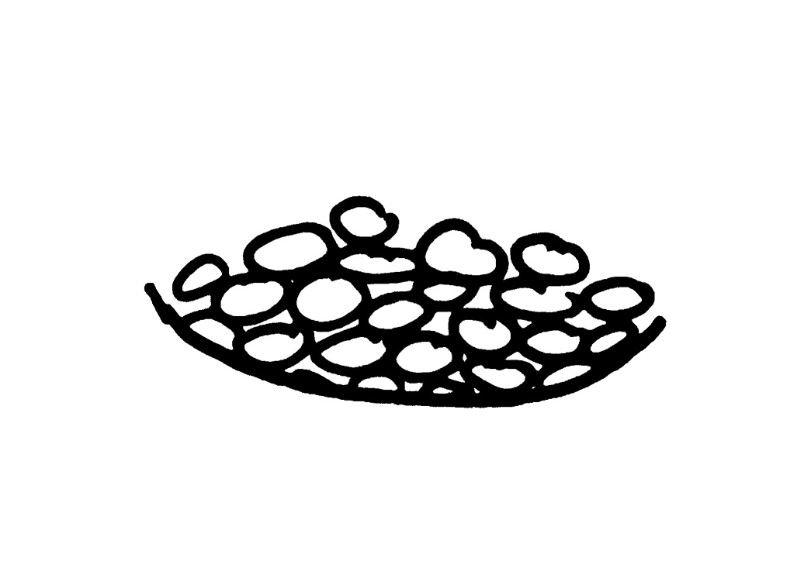
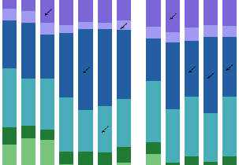
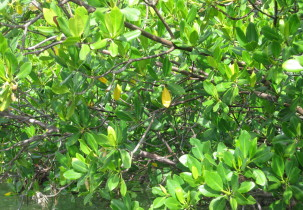

As a science writer and editor based in NYC, I make sense of the world for fun and profit.
Staff writer at Space.com. My work has been featured by Scientific American, IEEE Spectrum, Quanta Magazine, The Scientist, Science Friday, WGBH's Inside NOVA, and Johns Hopkins Medicine Magazine.
I've put together interactive data visualizations, promoted organizations with social media, fact-checked, copyedited, programmed in Python, and led an improv comedy group. Super shiny resume here, and my twitter feed is here. Email me: saraholewin (at) gmail.
If you're looking for my blog, that's back on Wordpress. Check out my (admittedly not recently updated) posts explaining everything from the Tetris Effect to How Not to Sit in a Chair.
I sometimes do things!
(Sort writing clips with buttons above)
Space.com
Does 'The Martian' Movie Do the Book Justice? Yes. Yes, It Does.
We explore how the space survival flick measures up.
Space.com
Ice Lab Plays it Cool for Pluto Flyby
Arizona ice lab coaxes crystal-clear ice from mixes of methane, nitrogen and even carbon monoxide.
Scientific American
Steering Evolution of Antibiotic Resistance
A "time machine" algorithm, backed by experimental data, reveals how to cycle drugs to reverse resistance.
Scientific American
CSI: Aliens
Astronomers prep to detect cryptic exoplanet biosignals.
Quanta Magazine
A Grand Theory of Wrinkles
Collaboration between engineers and mathematicians has revealed universal rules for how wrinkles form.
IEEE Spectrum
Quick Fix: DIY Water Leak Detector
Pair the Nanospark with an iPhone to create a smart microcontroller.
Scientific American

30 Heat-Tolerant Strains of Bean Identified
Beans that beat the heat do more than protect food security; they could even expand into new territories.
Scientific American (infographic)

A Genetic Guide to Birds
In the most thorough genomic investigation to date, some birds perch on new branches. Art: Jen Christiansen
Scientific American

Unboiled Egg Untangles Knotty Protein Prob
A new machine could help biotech with a faster, cheaper way to purify proteins.
Science Friday
Peek Inside a Mechanical Calculator
Weighing in at 40 pounds, this machine was among the most powerful - and the most difficult.
IEEE Spectrum (interactive)

Changing Smartphone Recipes
Teardowns reveal manufacturers' priorities. (Chosen as Tableau's "Viz of the Day" Dec 9, 2014)
Science Friday
Gift of the Mummy
A patient more than 3,000 years old takes a turn through a CT scanner.
IEEE Spectrum
Microwave Stethoscope Lets Physicians Peer Into the Lungs
A stick-on sensor can measure vital signs and lung fluid.
IEEE Spectrum
LEDs Bring New Light to Car-to-Car Comm
Signals transmitted by LEDs will help vehicles cooperate and avoid crashes.
IEEE Spectrum

Your Candy Wrappers are Listening
Visual microphone reconstructs nearby sound from silent videos of ordinary objects.
IEEE Spectrum

How to Catch a Memory Copycat
In the competitive world of memory chip manufacture, how do you find a fraud?
Scienceline
The Ultimate Environmental Challenge
If you want people to conserve, you're going to have to convince...me.
IEEE Spectrum
Google's Cardboard Virtual Reality Kit
Google debuts minimalist virtual reality and lets you build your own from a pizza box.
Scienceline (infographic)

Planet-hunter's guide to the galaxy
IEEE Spectrum

Holographic Displays Come to Smartphones
Light-field displays for mobile devices might be only a year away.
Scienceline
Thinking machines?
A Turing test doesn't measure a computer's intelligence, but it does say something about its usefulness.
Scienceline

Written in the clouds
Cargo ships and weather balloons - no one said MAGIC was easy.
The Scientist

A face to remember
MIT group's 'feature tuning' algorithm can make your profile more (or less) memorable.
Scientific American (infographic)
A Genetic Guide to Birds
In the most thorough genomic investigation to date, some birds perch on new branches. Art: Jen Christiansen
Scienceline (video)

Close up: Fly's Eye Photography
Artist M. Henry Jones turns lenses and lighting into 3D portraits that really pop. With Joshua A. Krisch
Scienceline

Science and art collide in space images
What are we really seeing when we look at photos of planets and stars?
Scienceline

Florida's extraordinary mangroves
'Walking trees' guard the shores of Florida and thrive in the salty water.
Scienceline
Our sleeping sun
Scientists wonder what's in store as sun activity lingers at lowest in over a century.
Scienceline

Will Comet ISON survive?
Tiny ice ball meets giant fireball.
Vector (Boston Children's Hospital)

From discovery to trial
A drug that may correct 'lazy eye.'
Vector (Boston Children's Hospital)

A secret in the plasma
Strengthening newborns' immune systems.
Vector (Boston Children's Hospital)

A mutation and a mystery
In mice, weight gain without a change in energy use.
Inside NOVA

Encryptions Past, Present, and Future
Four-part series on cryptography.
(WGBH's NOVA blog lost to time and space; here's a PDF)
Inside NOVA

Adventures in swarm robotics
Harvard's thousand-robot army is almost complete.
(WGBH's NOVA blog lost to time and space; here's a PDF)
Brown Daily Herald

Brain patterns of passion revealed
Love may be in the air, but it is also in your brainwaves.
Johns Hopkins Medicine Magazine

Baby dino yields big clues
Scientists look to antiquity for insight into modern human anatomy.

All hail the bird captain!
The bird captain knows all.
Hand-coded in HTML/CSS and JavaScript by Sarah Lewin. Hosted on GitHub. The layout of different sized blocks is from the Masonry library, by the way.